for i:2 thru 100000 do (if primep(i) then sol4: sol4+1 else sol4)$
sol4;

Tema CS3. Aritmética
(Soluciones de ejercicios propuestos)
1 Ejercicio 1
Ejercicio 1.1. Asignarle a la variable a el valor 2460 y a la b el 3030.
(%i41) a:2460$ b:3030$
Ejercicio 1.2. Calcular el conjunto D1 de los divisores positivos de a.
(%i43)
D1:divisors(a);
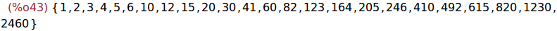
Ejercicio 1.3. Calcular el conjunto D2 de los divisores positivos de b.
(%i44)
D2:divisors(b);
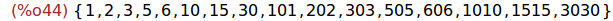
Ejercicio 1.4. Calcular, usando la función intersection, el conjunto D de
los divisores comunes de a y b.
(%i45)
D:intersection(D1,D2);
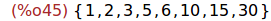
Ejercicio 1.5. Calcular el máximo común divisor de a y b.
(%i46)
gcd(a,b);
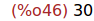
Ejercicio 1.6. Calcular el mínimo común múltiplo de a y b.
(%i47)
lcm(a,b);
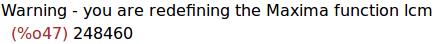
2 Ejercicio 2
Ejercicio 2.1. Asignarle a la variable n el valor 2008!
(%i48)
n:2008!;
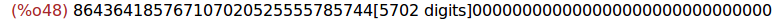
Ejercicio 2.2. ¿Cuántas cifras tiene n en base 10?
(%i49)
bfloat(n);
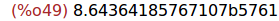
Por tanto, tiene 5762 cifras.
Ejercicio 2.3. Calcular la descomposición de n en productos de factores
primos.
(%i50)
ifactors(n);
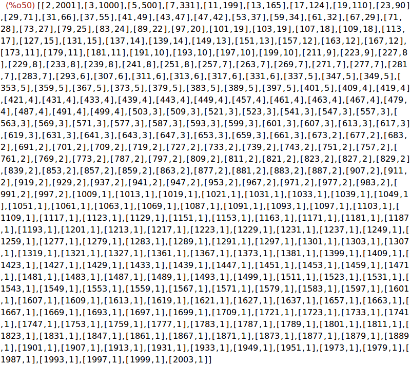
Ejercicio 2.4. ¿Con cuántos ceros termina n?
Puesto que el exponente de 5 en la descomposición anterior es 500, n termina
con 500 ceros. En efecto,
(%i51)
n/10^500;
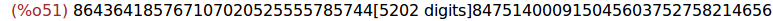
(%i52)
n/10^499;
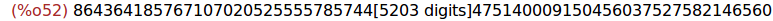
3 Ejercicio 3
Ejercicio 3. Escribir un programa para asignarle a la variable sol3 el
término que ocupa la posición 2008 en la sucesión de números primos
ordenados de manera creciente.
(%i53)
sol3:2$
for i:2 thru 2008 do sol3:next_prime(sol3)$
sol3;
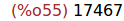
4 Ejercicio 4
Ejercicio 4. Escribir un programa para asignarle a la variable sol4 el
número de primos inferiores a 100000.
(%i56)
sol4:0$
for i:2 thru 100000 do (if primep(i) then sol4: sol4+1 else sol4)$
sol4;
5 Ejercicio 5
Ejercicio 5. Escribir un programa para asignarle a la variable sol5 el
término que ocupa la posición 9592 en la sucesión de números primos
ordenados de manera creciente.
(%i59)
sol5:2$
for i:2 thru 9592 do sol5:next_prime(sol5)$
sol5;
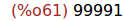
Ejercicio 5.2. Comprobar si sol5 es el mayor primo menor que 100000.
(%i62)
is(sol5=prev_prime(100000));